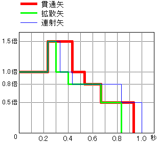

| 무기의 종류 | 배율 |
|---|---|
| 대검/태도 | 4.8 |
| 한손검/쌍검 | 1.4 |
| 해머/수렵피리 | 5.2 |
| 랜스/건랜스 | 2.3 |
| 천룡곤 | 1.8 |
| 슬래시액스 | 5.4 |
| 보우건/활 | 1.2 |
무기 배율은 무기가 본래 가지고 있는 세기를 나타내는 수치로, 공격에 의한 몬스터에게의 데미지 계산의 기본이 됩니다.
현재 상태에 표시되고 있는 공격력은, 이 무기 배율에 일정 배율을 곱한 값이 표시되고 있습니다.
각 무기의 배율은 왼쪽 표와 같습니다.
※현재 상태에 표시되고 있는 공격력을 왼쪽에 기재된 배율로 나누면, 무기 배율을 구할 수 있습니다
식사 효과나 아이템 사용 등에 의한 공격력 업은, 모두 이 무기 배율에 일정 수치가 가산됩니다.
따라서 현재 상태에서는 무기의 종류에 따라 공격력 상승량이 다릅니다.
| 타입 | 위력 | 곡사 | 위력 | 속성 | 기절 |
|---|---|---|---|---|---|
| 연사LV1 | 12 | 방산형 | 18×7히트 | 0.7배 | 3 |
| 연사LV2 | 12·5 | 집중형 | 16×5히트 | 0.7배 | 2 |
| 연사LV3 | 12·5·4 | 폭렬형 | 15·무19 | 0.2배 | 30 |
| 연사LV4 | 12·5·4·2 | 절단형 | 12×7히트 | 0.7배 | - |
| 확산LV1 | 4·5·4 | ||||
| 확산LV2 | 5·6·5 | ||||
| 확산LV3 | 4·5·5·5·4 | ||||
| 확산LV4 | 4·5·6·5·4 | ||||
| 관통LV1 | 6×3히트 | ||||
| 관통LV2 | 6×4히트 | ||||
| 관통LV3 | 6×5히트 | ||||
| 관통LV4 | 6×6히트 | ||||
| 오라 애로우 | 12×5배 |
활의 화살은, 연사, 확산, 관통의 3종류의 타입이 있으며, 각각 LV1~LV4까지 있습니다.
연사: 핀포인트에 1~4개의 화살을 동시에 내뿜는다. 연사 레벨이 높을수록 화살 개수가 늘어난다
확산: 방사상으로 복수의 화살을 내뿜는다. 확산레벨이 높을수록 화살의 수가 늘어난다
관통: 관통하는 화살을 내뿜는다. 관통레벨이 높을수록 히트수가 늘어난다
곡사는, 방산, 집중, 폭렬, 절단의 4종류의 타입이 있습니다.
방산: 화살의 공격력이 통상보다 높다
집중: 상태이상의 축적치가 통상보다 높다
폭렬: 기절치가 높고, 육질무시 대미지가 있다
절단: 탄육질로 계산하지만, 절단속성의 공격을 한다
활의 종류에 따라, 어느 타입/레벨을 사용할 수 있는지는 정해져 있습니다.
타입마다의 화살의 위력은, 왼쪽 표대로입니다.
무기 배율에, 화살의 위력을 %로 곱한 것이 기본위력이 됩니다.
화살에 강격병을 장착하면, 위력이 1.5배가 됩니다.
(궁기[궁귀] 발동 시 또는 강종무기는 1.6배, 궁기[궁귀] 발동 시로 강종무기의 경우는 1.7배,
강종/패종 퀘스트로 천람방어구 2부위 이상 그리고 패종무기의 경우, 1.7배)
화살에 타격병을 장착하면, 타육질로 계산하고, 기절치가 축적됩니다.
| 차지 단계 | 기본위력배율 | 속성배율 | 상태이상배율 |
|---|---|---|---|
| 1 | 0.4 배 | 0.5 배 | 0.5 배 |
| 2 | 1.0 배 | 0.75 배 | 1.0 배 |
| 3 | 1.5 배 | 1.0 배 | 1.0 배 |
| 4 | 1.8 배 | 1.125 배 | 1.0 배 |
| 오라4 | 1.0 배 | 1.0 배 | 1.0 배 |
| 오라5 | 1.125 배 | 1.1 배 | 1.1 배 |
같은 타입/레벨의 화살이라도, 차지단계에 따라 기본위력이 변화합니다.
왼쪽 표는, 차지단계마다의 기본위력배율입니다.
(차지 단계4는, 장전 수 업 스킬이 발동하고 있는 경우만 사용 가능합니다)
화살은, 발사 후의 시간경과에 따라, 아래 그림처럼 위력이 변화합니다.

| 스킬 | 효과 |
|---|---|
| 연사화살위력UP | 연사화살의 위력이 1.1배 |
| 관통화살위력UP | 관통화살의 위력이 1.1배 |
| 확산시위력UP | 확산 시의 위력이 1.3배 |
| ○속성 공격력 강화 | 각속성의 위력 업 |
| 상태이상공격 강화 | 각병의 속성값이 1.125배 |
왼쪽 표에 나타난 스킬이 발동하고 있으면, 화살의 위력이나 속성값이 증가합니다.
회심률이란, 공격했을 때 크리티컬 히트가 발생할 확률입니다.
크리티컬 히트 시, 회심률이 0%보다 큰 경우는 기본위력이 1.25배, 마이너스 수치인 경우는 기본위력이 0.75배가 됩니다.
일반 속성(화/수/뇌/용/빙)이 붙은 무기로 공격하면, 통상 데미지에 더해 속성 데미지가 추가됩니다.
복합 속성은 복수의 속성이 하나의 무기에 포함됩니다. ○속성강화 스킬은 각각에 적용됩니다.
| 복합속성 | 화 | 수 | 뇌 | 용 | 빙 |
|---|---|---|---|---|---|
| 화염 | 70% | - | - | 70% | - |
| 빛 | 70% | - | 70% | - | - |
| 뇌극 | - | - | 70% | 70% | - |
| 천상 | 30% | 100% | 70% | - | - |
| 치동 | 80% | - | - | 40% | 80% |
| 흑염 | 50% | - | - | 150% | - |
| 선율 | - | 100% | - | - | 100% |
| 어둠 | - | - | - | 80% | 80% |
| 홍마 | 150% | - | - | 50% | - |
| 바람 | - | - | 80% | - | 80% |
| 울림 | - | 100% | - | 100% | - |
현재 상태에 표시되고 있는 속성값은, 실제 속성값을 10배 한 것이며, 데미지 계산 시에는 1/10 수치로 계산됩니다
따라서, 속성데미지량은 표시속성값÷10×차지배율 이 됩니다.
| 타입 | 상태이상병 | ＋１ | ＋２ | ＋３ | 폭격병 | 타격병 기절치 |
|---|---|---|---|---|---|---|
| 연사LV1 | 13 | 14 | 17 | 19 | 70 | 3-4 |
| 연사LV2 | 7×2발 | 8 | 9 | 10 | 40×2발 | 3-4 |
| 연사LV3 | 5×3발 | 5 | 6 | 7 | 32×3발 | 3-4 |
| 연사LV4 | 4×4발 | 4 | 5 | 6 | 28×4발 | 3-4 |
| 확산LV1 | 5×3발 | 5 | 6 | 7 | 26×3발 | 3-4 |
| 확산LV2 | 6×3발 | 6 | 7 | 9 | 32×3발 | 3-4 |
| 확산LV3 | 5×5발 | 5 | 6 | 7 | 22×5발 | 3-4 |
| 확산LV4 | 5×5발 | 5 | 6 | 7 | 24×5발 | 3-4 |
| 관통LV1 | 5×3히트 | 5 | 6 | 7 | 28×3히트 | 3-4 |
| 관통LV2 | 4×4히트 | 4 | 5 | 6 | 28×4히트 | 3-4 |
| 관통LV3 | 4×5히트 | 4 | 5 | 6 | 28×5히트 | 3-4 |
| 관통LV4 | 4×6히트 | 4 | 5 | 6 | 28×6히트 | 3-4 |
| 오라 애로우 | 25 | 37×5배 55×5배(화재현장) | 20 | |||
| 방산형 | 2×7히트 | 3 | 4 | 5 | 26×7히트 | |
| 집중형 | 6×5히트 | 7 | 8 | 9 | 28×5히트 | |
| 폭렬형 | - | - | - | - | 50·100 | |
| 절단형 | 2×7히트 | 3 | 4 | 5 | 24×7히트 |
화살에 상태이상 속성(독·마비·수면) 병을 장착하면, 상태이상 속성이 부가된 화살을 쏠 수 있습니다.
상태이상 속성병을 장착하면, 활에 부가되어 있는 일반 속성은 무효가 됩니다.
속성값은, 왼쪽 표대로입니다. 여러 개의 화살을 쐈을 경우는, 1개마다 속성값이 부가됩니다.
근접무기와는 달리, 반드시 발동합니다.
상태이상병은 상태이상공격 강화 스킬이 발동하고 있으면, 속성값이 1.125배가 됩니다.
또한, 차지 단계1일 때만 속성값이 절반이 됩니다. 독병의 경우, 차지 단계3 이상에서 1.5배가 됩니다.
폭격병의 경우, 무속성의 대미지가 되고 변경 불가치의 대미지를 줍니다.
타격병의 경우, 차지1의 경우 기절치는 절반이 됩니다.
거리에 따라, 0.7배, 1.0배, 0.8배와 기절치는 변화합니다.
근접에 기재하고 있습니다.
활의 히트 이펙트는, 발사 후의 위력변화에 따라 다릅니다.
이펙트는 1.5배 ⇒ 1.0배 ⇒ 0.8배 ⇒ 0.5배 순으로 작은 이펙트가 됩니다.
(주는 데미지에는 영향받지 않지만, 데미지가 거의 통하지 않는 부위에서도 큰 이펙트가 나오는 경우도 있습니다)
| 상태 | 배율 |
|---|---|
| 마비상태중 | 1.1배 |
| 바위로 의태 중 （바살모스） | 1.1배 |
| 구멍 함정 （떨어진 후 발버둥치기 시작할 때까지만） | 1.1배 |
| 수면 중 （첫 타격만） | 3.0배 |
몬스터가 특정 상태일 때 공격하면, 왼쪽 표처럼 주는 대미지가 증가합니다.
(증가하는 것은 무속성 대미지뿐이며, 속성 대미지는 변화하지 않습니다)
마비 함정에 걸려 있을 때는 마비 상태가 아니라 저림 상태이므로 증가하지 않습니다.
미발각 상태에서 함정에 빠뜨리면, 효과 시간이 약 1.7배로 늘어납니다. 또한, 분노 시에는 약 0.7배가 됩니다. (미발각이 우선)
(라잔은, 재워서 떨어뜨려도 6초 그대로)
몬스터가 약해져 자고 있는 경우도 수면 중과 동일. 단, 몬스터의 체력은 서서히 회복하고 있다.
(에스피나스의 퀘스트 개시 시 상태는 제외)
몬스터에는 육질이 설정되어 있어, 대미지를 경감시킵니다.
통상 대미지, 속성 대미지 각각이 육질에 의해 경감됩니다.
또한, 몬스터에게는 육질과는 별도로 전체 방어율이 설정되어 있어, 총 데미지 수치를 경감시켜 버립니다.
게다가 분노 상태가 되면 전체방어율에 보정이 걸리는 몬스터도 있습니다.
플레이어의 공격력을 올리는 수단은 여러 가지 있습니다만, 크게 나누어 3개의 그룹으로 나뉩니다.
1: 공격력 업 스킬 발동, 공격력을 올리는 아이템 소지 (힘의 부적·힘의 발톱)
2: 식사 효과에 의한 상승, 귀인약·귀인약 그레이트 사용
3: 괴력의 씨·괴력의 환약·귀인 피리 사용
그룹1은, 퀘스트 중에 힘이 다해도 효력이 사라지지 않습니다.
그룹2는, 퀘스트 중에는 계속 유효하지만, 힘이 다하면 효력이 사라집니다.
그룹3은, 일정 시간이 지나면 효력이 사라집니다.
그룹 2와 3은 그룹 내 각 효과가 중복되지 않습니다. 중복된 경우에는 순서에 관계없이 효과가 큰 쪽이 우선됩니다.